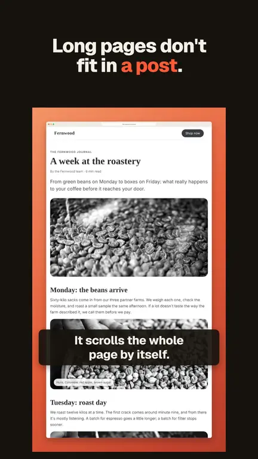
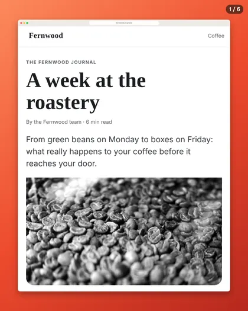
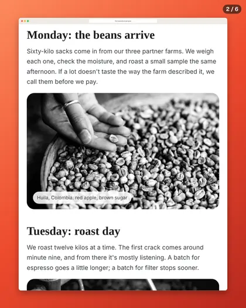

Turn a webpage screenshot into a video or carousel
Checked November 4, 2026. Written for Vitrine 1.2.2.
A long page makes a good post. A scrolling video shows the whole thing moving. A carousel lets people swipe through it, slide by slide. Here is how to make either one from a web page, the slow way and the quick way.
Making a scrolling video
Way 1: Do it yourself
- Take a full page screenshot of the page. In Chrome, open DevTools (F12 on Windows, Cmd + Option + I on Mac), press Ctrl + Shift + P (Cmd + Shift + P on Mac) and choose Capture full size screenshot. More in how to take a full page screenshot in Chrome.
- Open a video editor and put the tall image on the timeline. Add a position or pan animation that slides it from the top to the bottom.
- Export in the size your platform wants.
It works, and it takes a while. The usual mistakes are scrolling too fast to read, and text that is too small on a phone.
Way 2: A tool that animates an image
Some websites take a tall image, let you choose the speed and the easing, and export a video. You still need a good capture first, and the result is only as clean as the screenshot you give it. Free plans often limit the length or the number of exports.
Way 3: A tool that starts from a link
Other tools take a web address, load the page on their own computers and record it scrolling. They are quick for a public page. The trade: they never see the version you are signed in to, and the output has the length and size they chose.
Way 4: Vitrine, from the capture you already have
Vitrine is a free Chrome extension. The video is made from your capture, in your framed look, on your computer.
- Add Vitrine from the Chrome Web Store and pin it.
- Open the page and press Alt + Shift + S (Windows) or Option + Shift + S (Mac). Vitrine captures the whole page and opens the Studio.
- In the Studio, find Page to video. Pick a size: 16:9 for slides and X, 1:1 for posts, 4:5 for feeds, 9:16 for Stories.
- Choose a zoom (1×, Auto, 1.5× or 2×), and the length with the slider.
- Click Make video. You get an MP4 in your Downloads folder.

Good to know:
- The speed follows reading. By default the video scrolls at a pace you can read, and Vitrine tells you if the length you picked shows only the top part of a long page. When a long page does not fit in the length you chose, Vitrine offers Highlights, which pauses on a few parts of the page for a few seconds each, and Longer video, which goes up to 2 minutes.
- Small text on a phone. In the tall sizes (9:16 and 4:5), if the text would be small, Vitrine says so. Make your Chrome window narrow before you capture, so the page lays out like it does on a phone.
- Free videos carry a small “Made with Vitrine” tag. Pro removes it.
- If Chrome has no H.264 encoder, Vitrine warns you that the video may not play on an iPhone or in QuickTime.
- Nothing is uploaded. Videos are made on your computer, with Chrome’s own video tools.
Making a carousel
A carousel is a set of slides, usually 4:5, that people swipe through on LinkedIn or Instagram.
By hand
Capture the page, then cut the tall image into slides in a design tool, one frame per slide, and number them. The hard part is where to cut. Cut in the wrong place and a line of text is sliced in half.
With Vitrine
- Capture the page the same way (Alt + Shift + S or Option + Shift + S).
- In the Studio, find Carousel. Vitrine makes numbered 4:5 slides and cuts them between blocks of text, not through them.
- Choose a zoom if the text looks small. Then click PDF for LinkedIn, or PNG slides (ZIP) for Instagram.


Carousels work best on long pages. A short page makes only one or two slides, and Vitrine says so, then offers the framed image instead. On a very long page the carousel holds the first slides, and you can crop the capture to pick another part. Free carousels carry the small “Made with Vitrine” tag on the last slide.
Which way should you use?
- One video, no rush, and you like editing: do it yourself.
- A public page, no capture needed: a tool that starts from a link.
- Pages you capture often, pages you are signed in to, or a video and a carousel from the same capture: Vitrine.
What it costs
Making videos and carousels is free, with the small tag. Pro is $24 once, with no subscription, and it removes the tag. The launch price is $19 until November 30, 2026. See the price comparison and the Vitrine home page.
Related: full page screenshot to PDF.